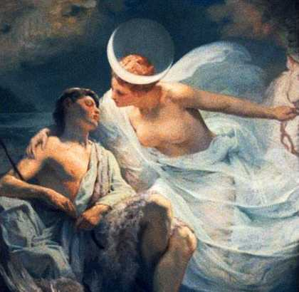

Editorial by Rose Kelleher 
Selene and Endymion
After this issue, SCR will be on hiatus for a while. I’m stepping down as editor and don’t yet have a replacement lined up. I inherited the job unexpectedly, starting with Issue 12, and now I really must turn my attention to other things.
This issue was co-edited by Angela France and me with the help of esteemed guest editors Ann Drysdale and R. Nemo Hill.
Special thanks are due to Wendy Videlock, our featured poet, and Bill Knott, our featured artist. As always, thanks to Peter Bloxsom for hosting the site.
Kudos to Jonathan Kessler, who makes his poetry debut in this issue with “Octopus.” Someday we’ll be able to say we knew him when.
~
A word about gender balance. In the past, I’ve made a point of posting calls for submissions on women’s poetry lists at the start of the reading period, but this time I never got around to it. The result: approximately 72% of our submitters were men.
What are an editor’s responsibilities in this regard? If I hadn’t forgotten to post messages on WOM-PO and elsewhere, we would have received more submissions from women, and the issue would likely reflect that. Would it be better? Here’s where I cleverly evade the question and segue to our theme: God only knows.
~
Editors’ Picks
Ann Drysdale: “Being Youthful and Lacking Tact” by Tim Hawkins. First, the title snared me. Then I felt my face slipping into a grin as I read the poem and it still pleases me after a steady stream of re-reads. I shall keep it in my head. It is the gentlest of send-ups of all the earnest pretentiousness of my generation. Look! All the clichés are here; the tatami mat and the tea room and the inscrutable archetypal master who perhaps knew what we all found out later. Reading this, I feel the breeze lifting the curtain. I hear the bamboo but I listen to the bones. Reading this, I forgive myself and reach for a strawberry.
Angela France: “The End” by Michael Kriesel for its sinuous, bleak simplicity.
R. Nemo Hill: “Paradise Zoo” by Kathleen Kenny because we need more animal laughter in paradise.
Rose Kelleher: Jane Røken’s “Declaration” because it revels in its own music. Swift, swift is the dreamshift!
|